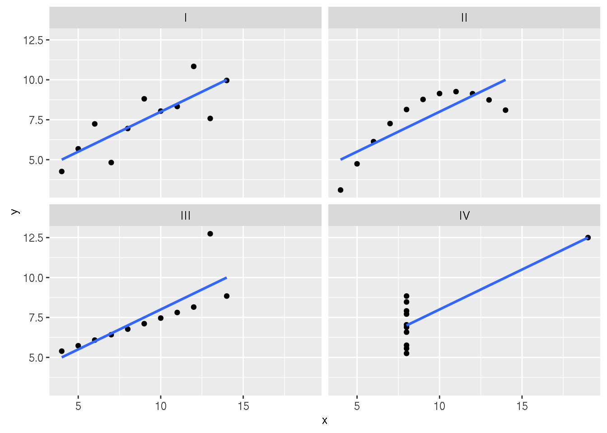
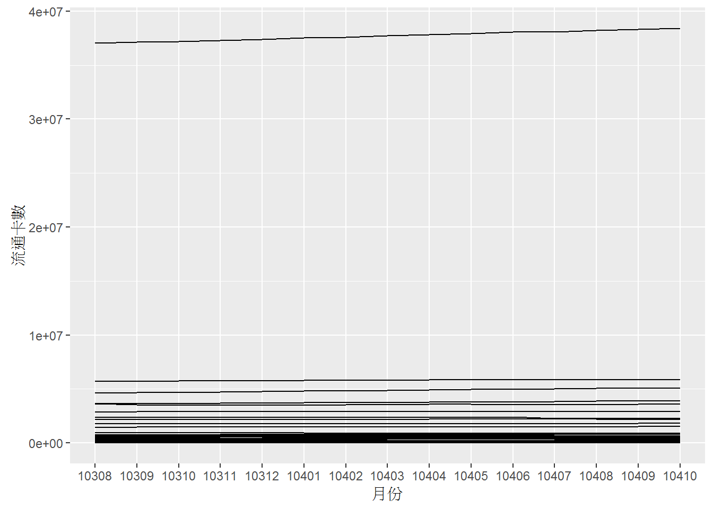
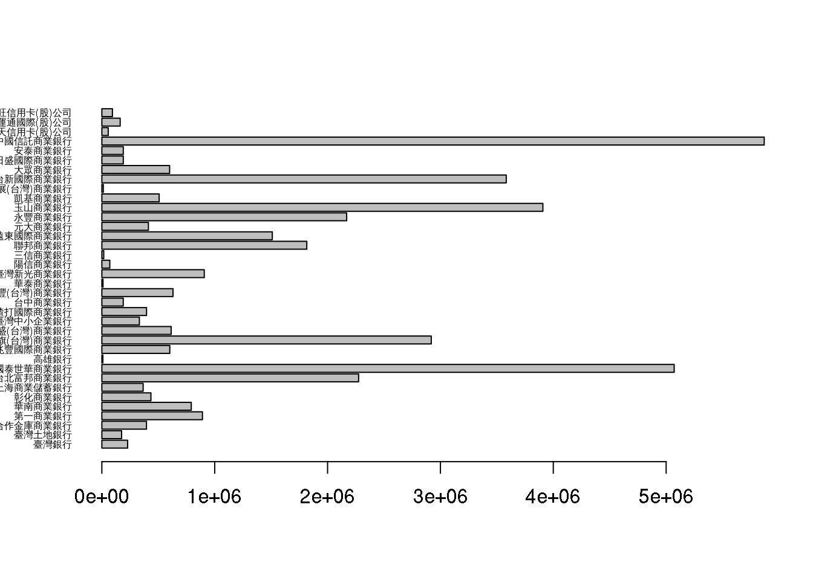
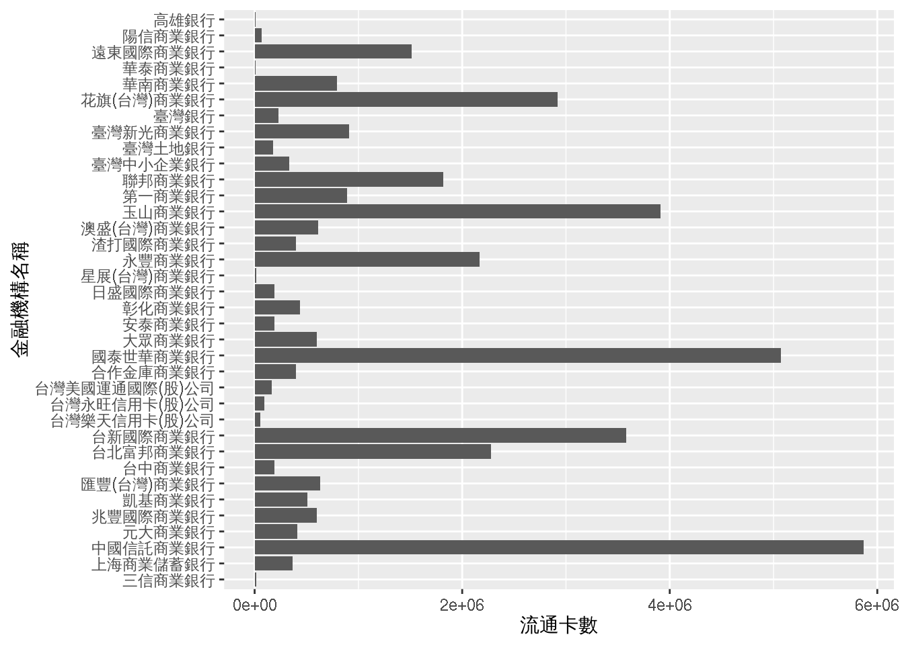
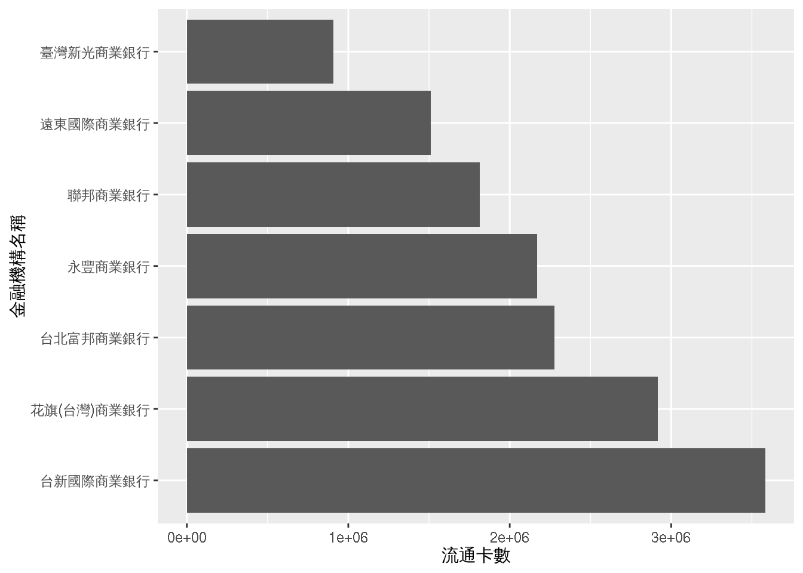
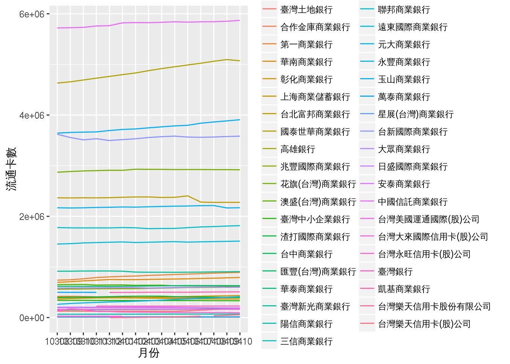
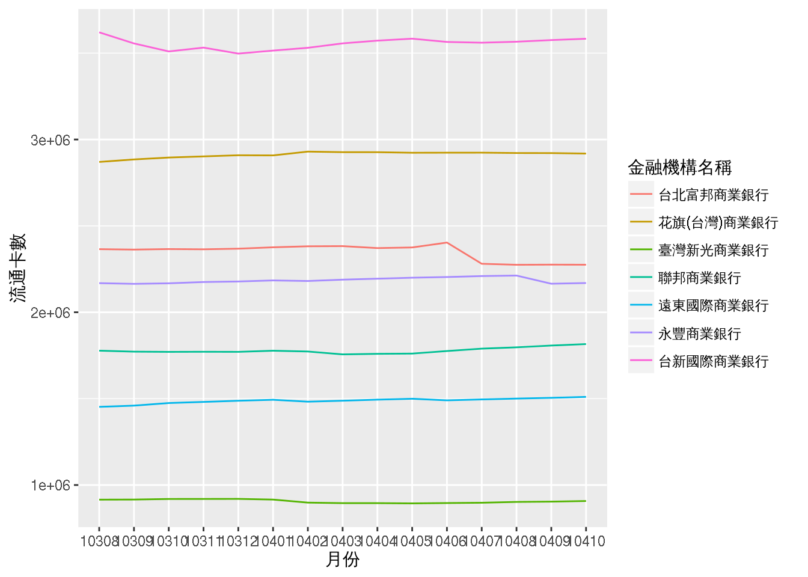

第三堂：Ｒ語言視覺化與報表
永豐銀行Ｒ語言課程
George Chao
木刻思股份有限公司course@agilearning.io, george@data-sci.info
January 13, 2016
0 關於教材授權
本教材之智慧財產權， 屬木刻思股份有限公司所有。
如果有朋友，覺得此教材很棒，希望能分享給朋友，或是拿此教材開課。非常歡迎大家來信至 course@agilearning.io 請求教材的使用授權唷！
1 Mini example to overview ETL + Viz
Fist Thing check your environment
library(datasets);library(dplyr);library(ggplot2);library(devtools);library(reshape2)
getwd()## [1] "/home/gg/works/R_Courses/RReportCrashCourse"Load Data & Setting Env
1. 打開
shell輸入指令下載資料集git clone https://github.com/whizzalan/RReportCrashCourse.git2. 在 RStudio console 輸入指令，切換工作目錄並確認下載內容。
setwd("RReportCrashCourse")dir()## [1] "data" "img" "index_cache"
## [4] "index_files" "index.html" "index.Rmd"
## [7] "installPackages.R" "main.css" "README.md"### 如果沒辦法讀到資料的直接執行看看下面程式馬
url <- "https://github.com/whizzalan/RReportCrashCourse/raw/gh-pages/data/datasets.rda"
download.file(url,paste0(getwd(),"/data/datasets.rda"))
if(.Platform$OS.type != "unix") load("data/datasets_big5.rda") else load("data/datasets.rda")
# 列出R環境中有的物件
# datasets::anscombe, Cl_info, creditData
ls()## [1] "a" "AM_Odd" "ans1"
## [4] "ans2" "bankingUrl" "Bet"
## [7] "Cl_info" "credit" "creditData"
## [10] "d" "DF" "doc"
## [13] "doc_str" "DT" "fac"
## [16] "fileName" "Games" "gg"
## [19] "github_Packages" "github_PackagesName" "grpsize"
## [22] "hist.ggplot" "hist.ggvis" "hist.rcharts"
## [25] "HM" "HM_Odd" "html"
## [28] "i" "img.height" "img.width"
## [31] "index" "l2" "monthsUrl"
## [34] "monthsUrl1" "monthsUrlList" "mtcars"
## [37] "mtcars.mean" "n" "p"
## [40] "packages" "packages_w1" "packages_w2"
## [43] "packages_w3" "packages_w4" "py"
## [46] "quartet" "res" "resp"
## [49] "shopping_list" "ss" "sss"
## [52] "t" "try1" "try2"
## [55] "try3" "try4" "tt"
## [58] "ttt"先前的數據觀察，小挑戰（Data Aggregation）
1.1 Anscombe’s quartet dataset
quartet## set x y
## 1 I 10 8.04
## 2 I 8 6.95
## 3 I 13 7.58
## 4 I 9 8.81
## 5 I 11 8.33
## 6 I 14 9.96
## 7 I 6 7.24
## 8 I 4 4.26
## 9 I 12 10.84
## 10 I 7 4.82
## 11 I 5 5.68
## 12 II 10 9.14
## 13 II 8 8.14
## 14 II 13 8.74
## 15 II 9 8.77
## 16 II 11 9.26
## 17 II 14 8.10
## 18 II 6 6.13
## 19 II 4 3.10
## 20 II 12 9.13
## 21 II 7 7.26
## 22 II 5 4.74
## 23 III 10 7.46
## 24 III 8 6.77
## 25 III 13 12.74
## 26 III 9 7.11
## 27 III 11 7.81
## 28 III 14 8.84
## 29 III 6 6.08
## 30 III 4 5.39
## 31 III 12 8.15
## 32 III 7 6.42
## 33 III 5 5.73
## 34 IV 8 6.58
## 35 IV 8 5.76
## 36 IV 8 7.71
## 37 IV 8 8.84
## 38 IV 8 8.47
## 39 IV 8 7.04
## 40 IV 8 5.25
## 41 IV 19 12.50
## 42 IV 8 5.56
## 43 IV 8 7.91
## 44 IV 8 6.89試做出下列表單
## mean(x) sd(x) mean(y) sd(y) cor(x, y)
## 1 9 3.198837 7.500682 1.958925 0.8163662HINT
- 回顧第二週ETL所學的 Example 5: group_by + summarise
Cl_info %>%
group_by(bank_nm) %>%
summarise(mean(mortgage_cnt))## mean(mortgage_cnt)
## 1 22537.591.2 Charts with ggplot2
The importance of graphing data before analyzing
library(ggplot2)
p = ggplot(quartet, aes(x, y)) + geom_point()
p = p + geom_smooth(method = lm, se = FALSE)
p = p + facet_wrap(~set)
p
1.3 ggplot Usage
- qplot() - for quick plots
qplot(x, y, data=, color=, shape=, size=, alpha=,
geom=, method=, formula=, facets=,
xlim=, ylim= xlab=, ylab=, main=, sub=)
- ggplot() - for fine, granular control of everything
- dataframe, aes()
- multi-layers
- geom_
xxx(): Geometric objects that define the basic “shape” of the elements on the plot
ggplot(data = , aes( x = , y = ), fill = , colour = ) +
geom_() +
theme_() +
coord_() + facet_() + stat_ () + …
# list all geom
ls(pattern = '^geom_', env = as.environment('package:ggplot2'))## [1] "geom_abline" "geom_area" "geom_bar"
## [4] "geom_bin2d" "geom_blank" "geom_boxplot"
## [7] "geom_contour" "geom_count" "geom_crossbar"
## [10] "geom_curve" "geom_density" "geom_density2d"
## [13] "geom_density_2d" "geom_dotplot" "geom_errorbar"
## [16] "geom_errorbarh" "geom_freqpoly" "geom_hex"
## [19] "geom_histogram" "geom_hline" "geom_jitter"
## [22] "geom_label" "geom_line" "geom_linerange"
## [25] "geom_map" "geom_path" "geom_point"
## [28] "geom_pointrange" "geom_polygon" "geom_qq"
## [31] "geom_quantile" "geom_raster" "geom_rect"
## [34] "geom_ribbon" "geom_rug" "geom_segment"
## [37] "geom_smooth" "geom_spoke" "geom_step"
## [40] "geom_text" "geom_tile" "geom_violin"
## [43] "geom_vline"ls(pattern = '^stat_', env = as.environment('package:ggplot2'))## [1] "stat_bin" "stat_bin2d" "stat_bin_2d"
## [4] "stat_binhex" "stat_bin_hex" "stat_boxplot"
## [7] "stat_contour" "stat_count" "stat_density"
## [10] "stat_density2d" "stat_density_2d" "stat_ecdf"
## [13] "stat_ellipse" "stat_function" "stat_identity"
## [16] "stat_qq" "stat_quantile" "stat_smooth"
## [19] "stat_spoke" "stat_sum" "stat_summary"
## [22] "stat_summary2d" "stat_summary_2d" "stat_summary_bin"
## [25] "stat_summary_hex" "stat_unique" "stat_ydensity"2 EDA from Data Visualization
2.1 ETL Recap & barchart
再次複習第二週所用資料，資料來源：10308-10410信用卡重要資訊揭露
# 觀看資料外觀
dim(creditData)## [1] 552 15# show 資料欄位
names(creditData)## [1] "月份"
## [2] "金融機構名稱"
## [3] "流通卡數"
## [4] "有效卡數"
## [5] "當月發卡數"
## [6] "當月停卡數"
## [7] "循環信用餘額"
## [8] "未到期分期付款餘額"
## [9] "當月簽帳金額"
## [10] "當月預借現金金額"
## [11] "逾期三個月以上帳款占應收帳款餘額含催收款之比率"
## [12] "逾期六個月以上帳款占應收帳款餘額含催收款之比率"
## [13] "備抵呆帳提足率"
## [14] "當月轉銷呆帳金額"
## [15] "當年度轉銷呆帳金額累計至資料月份"# Glance：窺一窺
head(creditData,5)## 月份 金融機構名稱 流通卡數 有效卡數 當月發卡數 當月停卡數
## 1 10308 臺灣土地銀行 124823 53892 799 1279
## 2 10308 合作金庫商業銀行 418860 230771 7347 4045
## 3 10308 第一商業銀行 738718 501452 10335 6207
## 4 10308 華南商業銀行 695329 459618 15893 7532
## 5 10308 彰化商業銀行 368628 190944 10390 2595
## 循環信用餘額 未到期分期付款餘額 當月簽帳金額 當月預借現金金額
## 1 218629 27270 340832 536
## 2 615212 149391 1701999 4768
## 3 1263380 827813 3212253 12073
## 4 602401 661945 2817399 923
## 5 161951 41026 1012061 648
## 逾期三個月以上帳款占應收帳款餘額含催收款之比率
## 1 0.7893302
## 2 0.6213265
## 3 0.1058145
## 4 0.1560892
## 5 0.1251310
## 逾期六個月以上帳款占應收帳款餘額含催收款之比率 備抵呆帳提足率
## 1 0.6805780 857.6586
## 2 0.5769584 228.1710
## 3 0.0000000 2557.8060
## 4 0.0000000 1090.0999
## 5 0.1242378 685.0680
## 當月轉銷呆帳金額 當年度轉銷呆帳金額累計至資料月份
## 1 1015 4855
## 2 0 19364
## 3 3987 37556
## 4 0 15984
## 5 1410 10877tail(creditData,5)## 月份 金融機構名稱 流通卡數 有效卡數 當月發卡數
## 548 附表4_1 中國信託商業銀行 5758500 3722803 64762
## 549 附表4_1 台灣美國運通國際(股)公司 161135 90036 3042
## 550 附表4_1 台灣大來國際信用卡(股)公司 26557 10428 0
## 551 附表4_1 台灣永旺信用卡(股)公司 119637 110133 8968
## 552 附表4_1 總計 37297249 24175779 453999
## 當月停卡數 循環信用餘額 未到期分期付款餘額 當月簽帳金額
## 548 29628 15323950 14401920 24170576
## 549 2410 332742 0 3803823
## 550 357 26729 3169 60412
## 551 44363 347079 91959 227441
## 552 347680 113212122 80178942 162614863
## 當月預借現金金額 逾期三個月以上帳款占應收帳款餘額含催收款之比率
## 548 628730 0.1509203
## 549 0 0.2093867
## 550 1156 0.6864040
## 551 3305 1.4865396
## 552 2216238 0.2602332
## 逾期六個月以上帳款占應收帳款餘額含催收款之比率 備抵呆帳提足率
## 548 0.0008390633 784.2901
## 549 0.0000000000 452.3338
## 550 0.0261902943 2041.8006
## 551 0.5694548048 767.7084
## 552 0.0322688253 694.6671
## 當月轉銷呆帳金額 當年度轉銷呆帳金額累計至資料月份
## 548 61024 677463
## 549 1170 30425
## 550 377 3000
## 551 1884 26931
## 552 390341 3946066str(creditData)## 'data.frame': 552 obs. of 15 variables:
## $ 月份 : Factor w/ 15 levels "10308","10309",..: 1 1 1 1 1 1 1 1 1 1 ...
## $ 金融機構名稱 : chr "臺灣土地銀行" "合作金庫商業銀行" "第一商業銀行" "華南商業銀行" ...
## $ 流通卡數 : num 124823 418860 738718 695329 368628 ...
## $ 有效卡數 : num 53892 230771 501452 459618 190944 ...
## $ 當月發卡數 : num 799 7347 10335 15893 10390 ...
## $ 當月停卡數 : num 1279 4045 6207 7532 2595 ...
## $ 循環信用餘額 : num 218629 615212 1263380 602401 161951 ...
## $ 未到期分期付款餘額 : num 27270 149391 827813 661945 41026 ...
## $ 當月簽帳金額 : num 340832 1701999 3212253 2817399 1012061 ...
## $ 當月預借現金金額 : num 536 4768 12073 923 648 ...
## $ 逾期三個月以上帳款占應收帳款餘額含催收款之比率: num 0.789 0.621 0.106 0.156 0.125 ...
## $ 逾期六個月以上帳款占應收帳款餘額含催收款之比率: num 0.681 0.577 0 0 0.124 ...
## $ 備抵呆帳提足率 : num 858 228 2558 1090 685 ...
## $ 當月轉銷呆帳金額 : num 1015 0 3987 0 1410 ...
## $ 當年度轉銷呆帳金額累計至資料月份 : num 4855 19364 37556 15984 10877 ...2.1.1 Data Wrangling First Step: data cleaning
- 資料中月份欄位髒髒的

# 確認問題欄位
unique(creditData$月份)## [1] 10308 10309 10310 10312 10401 10402 10403 10404
## [9] 10406 10407 10408 10409 10410 更新_10 附表4_1
## 15 Levels: 10308 10309 10310 10312 10401 10402 10403 10404 10406 ... 附表4_1credit <- creditData
# 更改資料格式
credit$月份 <- as.character(credit$月份)
credit$月份 <- ifelse(test = credit$月份 == "更新_10", yes = "10405", no = credit$月份)
credit$月份 <- ifelse(test = credit$月份 == "附表4_1", yes = "10311", no = credit$月份)
unique(credit$月份)## [1] "10308" "10309" "10310" "10312" "10401" "10402" "10403" "10404"
## [9] "10406" "10407" "10408" "10409" "10410" "10405" "10311"2.1.2 Data Wrangling Second Step: data type conversion
# dplyr::mutate is fast !!!
# credit <- credit %>% mutate(
# 月份 = as.numeric(月份)
# )
# 試畫看看，我發現惹什麼問題？
credit %>% ggplot(aes(x=月份,y=流通卡數)) + geom_line(aes(group=金融機構名稱))
2.1.3 Data Wrangling: filter your data
# 我只想先挑選10月的來看和幾個欄位
try1 <- credit %>% select(金融機構名稱, 月份, 流通卡數, 有效卡數, 當月發卡數, 當月停卡數) %>% filter(金融機構名稱 != "總計") %>% filter(月份=='10410')
# 傳統劃法
barplot(try1$流通卡數,names=try1$金融機構名稱,horiz=TRUE,las=1,cex.names=0.5)
# 現行主流畫法
p <- ggplot(try1,aes(x=金融機構名稱,y=流通卡數)) + geom_bar(stat='identity') + coord_flip()
p
# 潮流劃法
library(plotly)
try1 %>% plot_ly(x = 流通卡數, y = 金融機構名稱, type="bar", orientation = "h")2.1.4 Data Wrangling: arrange your data
# 將資料排序畫圖
try1 <- try1 %>% arrange(desc(流通卡數))
head(try1)## 金融機構名稱 月份 流通卡數 有效卡數 當月發卡數 當月停卡數
## 1 中國信託商業銀行 10410 5869043 3826677 45828 30599
## 2 國泰世華商業銀行 10410 5071267 3564481 60545 85098
## 3 玉山商業銀行 10410 3907811 2735477 46188 22691
## 4 台新國際商業銀行 10410 3583167 2431192 33148 25434
## 5 花旗(台灣)商業銀行 10410 2918634 2486708 18019 30029
## 6 台北富邦商業銀行 10410 2275159 1617158 24034 24501# 找出永豐銀行的位置, #7
index=which(try1$金融機構名稱=="永豐商業銀行")
## 由於金融機構名稱並非factor,ggplot2 group顏色吃factor
# transformation
try1 <- try1 %>% mutate(金融機構名稱=factor(try1$金融機構名稱,levels=try1$金融機構名稱))
# 挑選出永豐銀行前後兩的來比較
try2 <- try1 %>% filter(between(row_number(),index-3,index+3))
# 傳統畫法
barplot(try2$流通卡數,names=try2$金融機構名稱,horiz=TRUE,las=1,cex.names=0.4)# 現行主流畫法
p <- ggplot(try2,aes(x=金融機構名稱,y=流通卡數)) + geom_bar(stat='identity') + coord_flip()
p
# 潮流畫法
library(plotly)
# 小技巧，要調整自型
a <- list(tickfont = list(color="blue", size = 7))
try2 %>% plot_ly(x = 流通卡數, y = 金融機構名稱, type="bar", orientation = "h") %>%
layout(xaxis = a, yaxis = a)2.2 Line Plot
try3 <- credit %>% select(金融機構名稱, 月份, 流通卡數, 有效卡數, 當月發卡數, 當月停卡數) %>% mutate(金融機構名稱=factor(金融機構名稱,levels=unique(金融機構名稱))) %>%
filter(金融機構名稱 != "總計")
# 挑選出,之前比較的那幾家銀行
try4 <- try3 %>% filter(金融機構名稱 %in% try2$金融機構名稱)
try3 <- try3 %>% mutate(月份=factor(月份,levels=sort(unique(月份))))
class(try3$月份)## [1] "factor"# 現行主流畫法
p <- ggplot(try3,aes(x=月份,y=流通卡數,color=金融機構名稱, group = 金融機構名稱)) +
geom_line()
p
p <- ggplot(try4,aes(x=月份,y=流通卡數,color=金融機構名稱,group = 金融機構名稱)) +
geom_line()
p
# 潮流畫法（簡單板，某些可以！）
plot_ly(p)[練習&HW] 畫畫看 有效卡數 與 當月發卡數
3 R Markdown Features
再次題列幾項好處
- 製作reproducible的報告、投影片:
document、slides - 想寫數學式子好展現自己的專業 \(e=mc^2\):
mathjax - 只有一份source code，不需要額外複製圖片到報告中:
.rmd - 增加資料分析演算法的可讀性:
code and text - HTML的報告和投影片的格式方便瀏覽:
html - IDE? RStudio提供支援:
Knit Button
3.1 basic syntax (format)
#最大標題
##大標題
###標題
####小標題
分段落：兩個斷行
- 斜體：
*斜體字*, 粗體:**粗體字** 程式碼寫在行內： ` `區段程式碼(chunk code)：

3.2 Overview with RSudio
- YAML Metadata （RStudio範例）
- Markdown （RStudio範例）
- Makrdown Quick Reference
- Markdown Cheatsheet
- Markdown Reference
- R Code Chunk
3.3 Inline R Code chunk and Equations
- 利用 `r` 在markdown中插入R程式
- 插入 LaTeX 公式的方法：
- 行內
$ equation $
- 段落
$$ equation $$
- 行內

- 這是木刻思推出的第 3門課程
- 熵指標的公式為 \(-\sum{p_i \log{p_i}}\)，表示系統的亂度
[練習] chunk & chunk option
- 觀察將第一個 R Chunk中的 summary(cars) 改成 head(cars)
- 觀察 echo = TRUE -> echo = FALSE 結果差異？
- 觀察 eval = TRUE -> eval = FALSE 結果差異？
- 觀察在 chunk option 多加入 results = ‘asis’ 結果差異？
- 觀察 head(cars) 改成 knitr::kable(head(cars))
summary(cars)## speed dist
## Min. : 4.0 Min. : 2.00
## 1st Qu.:12.0 1st Qu.: 26.00
## Median :15.0 Median : 36.00
## Mean :15.4 Mean : 42.98
## 3rd Qu.:19.0 3rd Qu.: 56.00
## Max. :25.0 Max. :120.00plot(cars)
head(cars)knitr::kable(head(cars))| speed | dist |
|---|---|
| 4 | 2 |
| 4 | 10 |
| 7 | 4 |
| 7 | 22 |
| 8 | 16 |
| 9 | 10 |
Basic Chunk Options
echo(TRUE): whether to include R source code in the output file
eval(TRUE): whether to evaluate the code chunk
message(TRUE): whether to preserve messages emitted by message()
include(TRUE): whether to be written into the output document, but the code is still evaluated and plot files are generated
warning(TRUE): whether to preserve warnings in the outputcomment(“##”): set to comment notationresults(‘hide’,‘asis’): hide output ; asis treats the output of your R code as literal Markdown (when using like kable function)
Set global chunk options at code chunks header:
knitr::opts_chunk$set(comment="", message=FALSE, warning=FALSE, fig.width=12, fig.height=8.5)
library(datasets)
library(dplyr)
library(ggplot2)
library(devtools)
library(reshape2)
library(rmarkdown)
library(knitr)
library(plotly)3.4 Rendering
- RStudio: “Knit” command (Ctrl+Shift+K)
- Command line: rmarkdown::render function
rmarkdown::render("input.Rmd")[練習&HW] 各種輸出
- 輸出圖片

- 試著畫出之前的長條圖與線圖
- HINT:

- HINT: